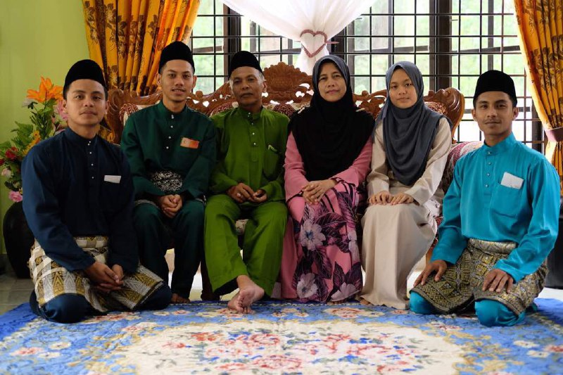
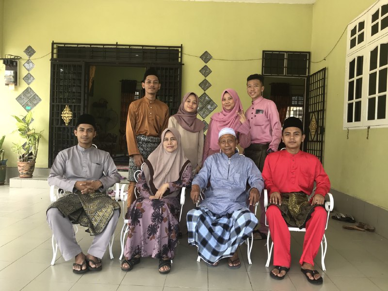

Introducing, this is my family. This picture was taken in 2019 during Eid- Fitri before the pandemic. I wish we can gather as usual before the pandemic but nevermind as long as my family safe from the virus. I have 4 siblings including me which is two brothers and a sister. I am number three and the most stubborn said my mum. I love my family so much because they always be there for me when I am in trouble. We should always apprericate our parents when they around because we do not know in the future if we can see them again. ❤